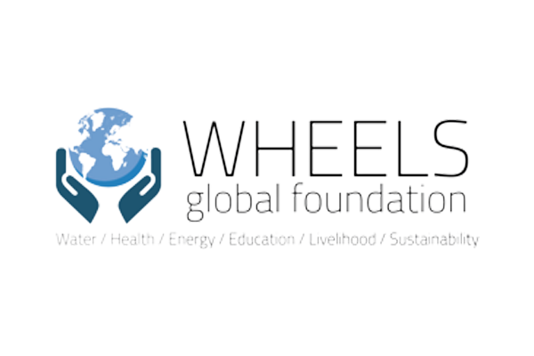
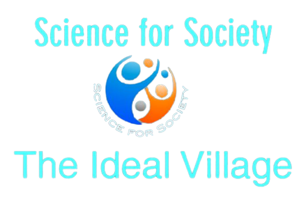
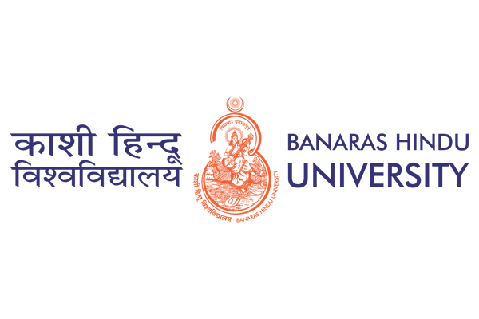
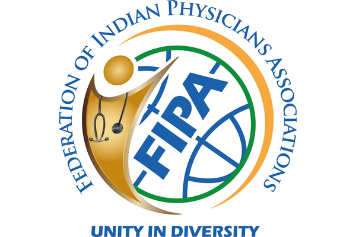

STANFORD
The Annual Ideal Village Conferences at Stanford have created a matrix for collaboration, networking and sharing of rural development experiences, knowledge, and project learnings between these organizations. The webinar series hosted by WGF has served as forum for thought leadership, best practices, key takeaways and practical outcomes in rural development. The 1st Ideal Village conference at Stanford University was focused on “Innovations for the Ideal Village”, and themes in subsequent years included: “Collaborations for the Ideal Village” (2017), “Empowerment of Women in Rural/Underserved Communities” (2018), “Corporate Social Responsibility” (2019) and "Sustainability and the Pandemic: Ensuring Human and Environmental Wellbeing." (2020)
https://www.stanford.eduPANIIT

PanIIT Alumni India (Pan IIT) is an umbrella organization, representing alumni of all Indian Institutes of Technology (IITs). Pan IIT is a not-for-profit Society under the Societies Registration Act XXI of 1860 with Registration No. S-56680 of 2006 dated 20 September 2006 duly registered with the Registrar of Societies, Government of NCT of Delhi, Delhi. It is the Indian legal entity of the global Pan IIT Alumni movement. The movement, over the years, has developed and and spread in various parts of the world. Besides India, it has a very active presence in the United States, Canada, United Kingdom, Korea, Singapore, and Australia.
https://www.paniit.orgWHEELS GLOBAL FOUNDATION (WGF)
With a mission to give back to India, USA and to global communities by providing technological solutions to issues related with water, health, energy, education, livelihood, and sustainability, a not for profit organization was formed to distinguish from the mission of PAN IIT Alumni Foundation, giving rise to WHEELS Global Foundation (WGF). In 2013, WGF was founded as an independent 501c3 to provide innovative technology driven solutions to the challenges that affect the global rural population in six areas; Water, Healthcare, Energy, Education, Livelihood and Sustainability. The organization partners with other national and international NGO’s and non-profit organizations, working in collaboration to provide assistance to a larger rural population globally. Our goal is to increase access, communication, and funding for technologies and/or charitable missions aimed at improving the living conditions of citizens across the globe through the implementation of sustainable programs.
https://www.wheelsglobal.orgSCIENCE FOR SOCIETY
Science for Society (S4S) is a collaborative forum bringing together the right experts and professionals to discuss needs, challenges, and innovative solutions that can improve the quality of life of under-served communities. The vision is to create holistic “Ideal Villages” where the basic needs of the community in water, healthcare, education, energy, livelihood, sanitation, etc. are fulfilled by applying innovations in science and technology and enabling integrated sustainable rural development. The kick-off S4S conference was held in June 2015 in San Diego, California. Annual S4S conferences are planned to build on the initial success and focus on collectively identifying and developing affordable, holistic solutions and products that can enable the Ideal Village concept to be scaled and deployed on a global basis. Such solutions have the potential to transform millions of lives in underserved regions across the globe. The efforts will rely on public-private partnerships to promote innovation and implementation.
https://www.scienceforsociety.comBANARAS HINDU UNIVERSITY, VARANASI
Banaras Hindu University is an internationally reputed temple of learning, situated in the holy city of Varanasi. This Creative and innovative university was founded by the great nationalist leader, Pandit Madan Mohan Malviya, in 1916 with cooperation of great personalities like Dr Annie Besant, who viewed it as the University of India. Banaras Hindu University was created under the Parliamentary legislation - B.H.U. Act 1915. It played a stellar role in the independence movement and has developed into the greatest center of learning in India. It has produced many great freedom fighters and builders of modern India and has immensely contributed to the progress of the nation through a large number of renowned scholars, artists, scientists and technologists who have graced its portals.The University family consists of about 15000 students belonging to all streams of life, castes and religions and races, about 1700 teachers, and nearly 8000 non-teaching staff A large number of students from foreign countries like the U.S.A, the countries of Europe, Asia, Middle East, Africa etc., come to study here. The university has taken a leadership role in promoting new ideas, the spirit of integration of the world, and cultivation of intellect and culture. Banaras Hindu University is small Virtually the universe in microcosm.
https://www.bhu.ac.inINSTITUTE OF MANAGEMENT SCIENCES, BANARAS HINDU UNIVERSITY, VARANASI
The University started Post Graduate and doctoral programme in Management in the year 1968 as a Department in the Faculty of Commerce. Since its inception, the university churned out over 4500 bright and dynamic managers who are currently holding prestigious positions in reputed business organizations across the globe. Envisaging the increasing need for imparting quality management education and research, the University transformed the Department of Management Studies to an independent Faculty of Management Studies in the year 1984. Since then dedicated efforts were made to run innovative, need based programmes for the corporate world under the dynamic leadership of professors of national and international repute. As a recognition of its contributions and enhanced future role it has to play in the Faculty was upgraded to Institute of Management Studies, Faculty of Management Studies has been upgraded to Institute of Management Studies, Banaras Hindu University on 16 December 2015. With continuous revision and innovation, the Institute has always been grooming managers capable of handling complex business operations of the day and future.
https://www.bhu.ac.in/fms/FEDERATION OF INDIAN PHYSICIANS ASSOCIATIONS
The Federation of Indian Physician Association, FIPA has been established to facilitate the aspirations of 21st Century physicians of Indian origin. The objectives are to engage Indian physicians, help them pursue their professional and community work. Right from inception, our motto is to ensure more involvement of physicians from India to have interest in young generation mentorship. We are raising donations for charitable work and fight for patient/physician rights. FIPA respects, keeps cognizance of the contribution of Indian physicians to the North American and other healthcare systems. Coming from a land of multilingual tongue, India, a symbol of cultural brotherhood, we strongly believe in “Unity in Diversity”. FIPA has been functioning with great responsibility in improving the public health system in North America and also globally. At present, we are committed to contribute excellence in: Academic/ Education, Charitable, Legislative, Financial Literacy, Mentorship programs for next generation, Entrepreneurial and skill development.
https://fipa.global